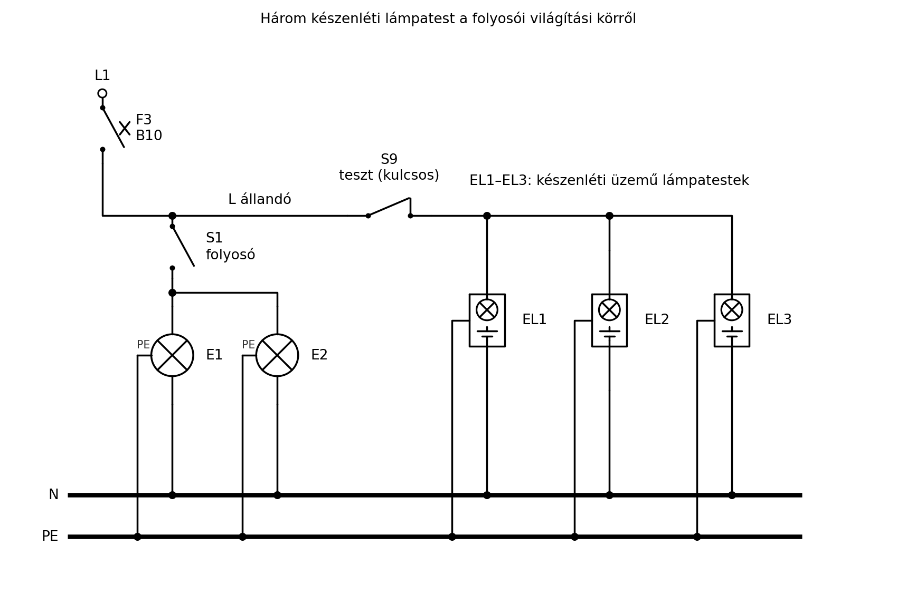
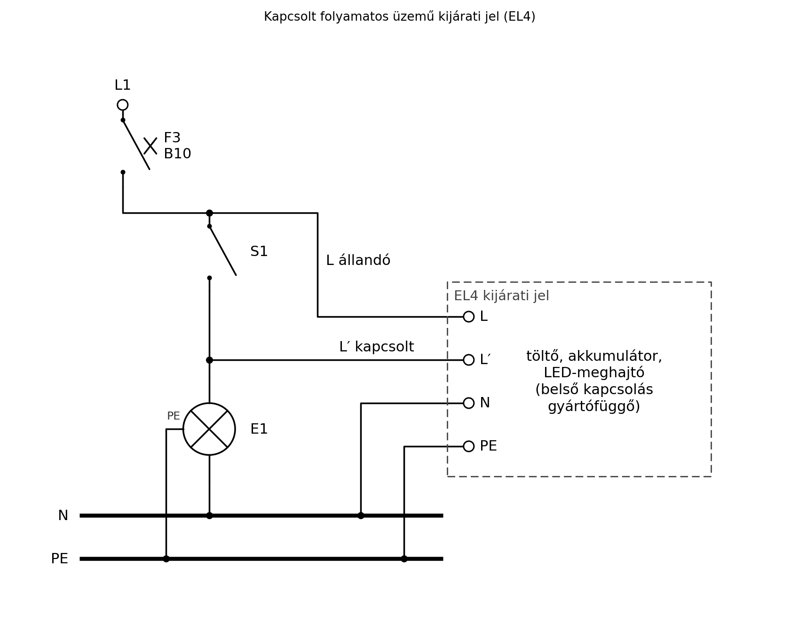

![Központi akkumulátoros biztonsági világítás – egyvonalas rajz - Szemléltető egyvonalas rajz, alapállapotban (feszültségmentes): a K1 nyugalmi helyzetében az akkumulátoros ágon áll, a hálózat jelenlétében meghúz és a hálózati ágra vált (hibabiztos elv). A kimeneti körök üzemmódját (folyamatos vagy készenléti) a központ körönként állítja. Szaggatott vonal: jel- és vezérlővezeték. A rendszerfeszültség (pl. 24 V vagy 216 V DC), a kábel funkciómegtartása (pl. E30/E90) és a fázisfigyelés módja gyártó- és tervfüggő (ellenőrizendő: MSZ EN 50171, MSZ HD 60364-5-56, TvMI).](assets/ve069-diagram-1.png)
Egy áruházban vagy irodaházban áramszünetkor a normál világítás kialszik. A bent tartózkodó embereknek pánik nélkül, gyorsan kell eljutniuk a kijáratig, és látniuk kell, merre van a kijárat. Ha a biztonsági világítás nem működik, az életveszélyt, tűz esetén füstben való tájékozódási zavart és balesetet okoz. Villanyszerelőként neked kell tudnod:
Ez az alfejezet a Világítás tervezése: beltér és kültér alfejezetre épül, de itt nem a kényelmi világításról, hanem a veszélyhelyzeti világításról beszélünk.
Az alábbi egyvonalas rajz egy központi akkumulátoros biztonsági világítási rendszert mutat a főelosztótól a menekülési útvonal lámpatestjeiig: hol van a töltő, az akkumulátor és az átkapcsoló, és honnan tudja meg a központ, hogy valamelyik szinten kialudt a normál világítás. (Az egyedi akkumulátoros lámpatestek bekötése a következő szakaszokban jön.)
Ábraolvasás. A Q20 kismegszakító önálló leágazásként táplálja a központi egységet; feliratozott és plombált, mert a lekapcsolása nem „áramtalanítás”, hanem az akkumulátor lemerítésének elindítása. Normál üzemben a hálózat jelen van: a K1 átkapcsoló meghúzva a hálózati ágról táplálja a kimeneti köröket, közben a T1 töltő tölti a G1 akkumulátort. Ha a főelosztó vagy a Q20 kiesik, a K1 elenged – nyugalmi helyzete a rajzon látható akkumulátoros ág –, és a G1–U1 ág veszi át a táplálást. A központ a szinti normál világítást is figyeli: az A30 fázisfigyelő 13–14 záró érintkezője a szinti fázis jelenlétében zárt; ha a szinti normál világítás kiesik – vagy a jelhurok elszakad –, a hurok nyit, és a központ az érintett kimeneti köröket vészüzembe kapcsolja akkor is, ha a főelosztó rendben van. A kimeneti köröknek saját védelmük (F21–F23) és funkciómegtartó kábelük van, így egy kör zárlata nem viszi el a többit; a központ körönként állítja, hogy a kör folyamatos (2. kör: kijárati jelek) vagy készenléti üzemű (1. és 3. kör).
A köznyelvben gyakran keverik a „vészvilágítás”, „biztonsági világítás” és „irányfény” kifejezéseket. A szabványos felosztás szerint érdemes megkülönböztetni.
Definíció. A vészvilágítás (emergency lighting) olyan világítási rendszer, amely a normál világítási táplálás kiesésekor működik. Az MSZ EN 1838 / MSZ EN 50172 szerinti felosztásban két fő része van (ellenőrizendő: magyar szakkifejezések az OTSZ és az MSZ EN 1838 magyar szövege szerint):
A biztonsági (menekülési) világítás további fajtái:
Szabvány. A létesítési kötelezettséget és a követelményeket hazánkban az OTSZ (54/2014. BM rendelet) és a biztonsági világításra vonatkozó Tűzvédelmi Műszaki Irányelv adja; ezekhez kapcsolódnak az MSZ EN 1838, MSZ EN 50172 és MSZ EN 50171 szabványok (ellenőrizendő: hatályos jogszabály és TvMI). A telepítés villamos követelményeire az MSZ HD 60364 sorozat vonatkozik; a biztonsági célú táplálásra az 5-56 rész ad irányelveket (ellenőrizendő: aktuális szabványkiadások és magyar bevezetésük).
A biztonsági világítás csak akkor ér valamit, ha a normál hálózat kiesése után is működik. A gyakorlatban két fő megoldás terjedt el.
Központi akkumulátoros rendszer. Egy központi szekrényben helyezik el az akkumulátorokat, a töltőt és az invertert. A biztonsági világítási köröket erről a központi egységről táplálják. Előnye, hogy az akkumulátorok karbantartása egy helyen történik, a lámpatestek egyszerűbbek, és egy központi felügyelet figyelhető. Hátránya, hogy a központi egység meghibásodása az egész vészvilágítást érintheti, és a biztonsági körök vezetékeinek tűzállósága kiemelt követelmény.
Egyedi akkumulátoros lámpatestek. Minden lámpatestbe beépített akkumulátor, töltő és elektronika kerül. Normál üzemben a hálózat tölti az akkumulátort; hálózatkieséskor a lámpatest saját akkumulátoráról világít. Előnye a decentralizált működés: egy lámpatest hibája nem viszi el a többit. Hátránya, hogy minden lámpatestet külön kell ellenőrizni, és az akkumulátorok egyenként öregszenek.
Egy egyedi akkumulátoros irányfény-lámpatest felépítését az alábbi ábra bal oldala mutatja: elöl az 1 piktogram, a 2 töltésjelző LED és a 3 tesztgomb, a burkolat alatt a 4 LED-modul, az 5 akkumulátor, a 6 töltő- és átkapcsoló elektronika és a 7 sorkapocs. A sorkapocson külön kapocs jelöli az állandó (töltő) fázist és – ha a lámpatest normál üzemben is a kapcsolóval világít – a kapcsolt fázist; mellettük az N és a PE. A jobb oldal a bekötést mutatja: az állandó fázis a kismegszakító után, de a normál világítás kapcsolója előtt ágazik le (helyes); ha a kapcsoló után kötik, a lámpatest minden lekapcsoláskor vészüzembe megy, és lemeríti az akkumulátorát (hibás).
A kapocsjelölés és az üzemmód (állandó vagy készenléti üzem) gyártófüggő, ezért a bekötés előtt a lámpatest bekötési rajzát kell követni. A HTML-kiadásban a részek rámutatásra kiemelődnek, a helyes és a hibás bekötés külön is megjeleníthető.
Üzemidő és átkapcsolási idő. A vészvilágításnak a hálózat kiesése után rövid időn belül el kell érnie a szükséges fényszintet. A gyakorlatban elterjedt követelmény az 5 másodpercen belüli átkapcsolás, de a szabvány pontos értéket ad meg (ellenőrizendő: MSZ EN 1838). Az üzemidő általában legalább 1 óra, de gyakran 3 órát írnak elő; ez attól függ, hogy az épületet milyen gyorsan lehet kiüríteni, illetve hogy az üzemeltető milyen kockázatértékelést fogadott el. Az értékek mindig a tervben szerepelnek, és a lámpatest adattábláján is jelölni kell őket.
Figyelem: az akkumulátor névleges kapacitása rendszerint 20 órás kisütésre () vonatkozik; 3 órás kisütésnél a kivehető kapacitás ennél kisebb. A blokkot ezért a gyártó 3 órás kisütési táblázata alapján kell ellenőrizni (ellenőrizendő: gyártói adatlap): lehet, hogy a „28 Ah-s” blokk 3 órára már nem elég, és a nagyobb méret kell. Ésszerűségi ellenőrzés: a 144 W-os terheléshez 3 órára kb. 0,6 kWh tárolt energia reális. A hőmérséklet is számít: hidegben a kapacitás csökken, melegben az élettartam rövidül, ezért a központi egységet fűtött, szellőztetett helyiségbe tervezik. Az akkumulátorok méretezését a Szünetmentes áramforrások, aggregátorok és akkumulátorok alfejezet viszi tovább. Jelölésben: az itteni ott , a (Ah) ott ; ott a megengedett mélykisütés (DOD) is szerepel a nevezőben, itt az öregedési tényező a számláló szorzója.
Az egyedi akkumulátoros lámpatest bekötése azon múlik, milyen üzemmódban kell működnie. A gyártó a lámpatesten vagy az adattábláján jelöli, melyik üzemmódra alkalmas, illetve hogyan állítható át (gyakori jelölés az angol rövidítés: NM – non-maintained, M – maintained; a pontos jelölés gyártói, ellenőrizendő: gyártói adatlap, MSZ EN 60598-2-22).
Definíció.
Szabály. Az egyedi lámpatest állandó fázisát annak a helyiségnek vagy útvonalszakasznak a normál világítási köréből vesszük, a kör kismegszakítója után, de a világítási kapcsoló előtt. Így a normál világítás minden kiesése – a hálózat kimaradása és a kör kismegszakítójának leoldása is – éppen ott indít vészüzemet, ahol sötét lett, a kapcsolgatás viszont nem. Ez nem ellentmondás a központi rendszerrel: a központi rendszer kimeneti köre a normál köröktől független, az egyedi lámpatest viszont szándékosan a helyi körről tölt (ellenőrizendő: MSZ EN 50172, MSZ HD 60364-5-56, TvMI).
A következő rajz egy folyosó világítási körét mutatja: két normál lámpa a kapcsolóval, három készenléti biztonsági lámpatest egy csoportban, a csoport közös, kulcsos tesztkapcsolójával.

Ábraolvasás. Kövesd a fázist az F3-tól. Közvetlenül utána a vezeték elágazik: az S1 felé a normál E1–E2 lámpák, az S9 tesztkapcsolón át az EL1–EL3 állandó fázisa megy. Több lámpatest egy csoportban egyszerűen párhuzamosan kapcsolódik a közös állandó fázisra, mindegyik kap N-t és PE-t. Az S9 kulcsos kapcsoló alaphelyzetben zárt (ezért bontó érintkezőként rajzoljuk); a kulcs elfordítása a csoport fázisát bontja, és ezzel valódi hálózatkiesést szimulál. A rajz négy állapotát az alábbi táblázat foglalja össze.
| Állapot | E1–E2 (normál) | EL1–EL3 (készenléti) |
|---|---|---|
| F3 be, S1 be, S9 alaphelyzet | világít | tölt, nem világít |
| F3 be, S1 ki, S9 alaphelyzet | sötét | tölt, nem világít (az állandó fázis megvan) |
| F3 be, S9 elfordítva (havi teszt) | S1 szerint | akkumulátorról világít |
| F3 leoldott vagy hálózatkiesés | sötét | akkumulátorról világít |
Kapcsolt folyamatos üzemű lámpatestnél – például egy előadóterem kijárati jelénél, amelynek az órák alatt a terem világításával együtt kell világítania – a lámpatestnek két fáziskapcsa van: az állandó L és a kapcsolt L′.

Ábraolvasás. Az EL4 L kapcsa ugyanonnan kapja a fázist, mint az előző rajzon a készenléti lámpatestek: az F3 után, az S1 előtt. Az L′ kapocs az S1 utáni kapcsolt fázisra kerül, ugyanarra, amelyre az E1 is. Az S1 bekapcsolásakor az EL4 a hálózatról világít, kikapcsolásakor kialszik, de tölt tovább; az L kiesésekor (az F3 leold vagy a hálózat kimarad) az S1 állásától függetlenül az akkumulátoráról világít. Ha az L és az L′ felcserélődik, a lámpatest a kapcsoló minden lekapcsolásakor vészüzembe megy – ez ugyanaz a hiba, mint a Valós életbeli alkalmazás esetében.
Hiba. Az állandó fázist a világítási kapcsoló után kötik be. A lámpatest minden lekapcsolást hálózatkiesésnek érzékel, vészüzembe megy és lemerül; a Valós életbeli alkalmazás szakasz bevásárlóközpontos esete pontosan ez.
Hiba. A tesztkapcsolót a nullavezetőbe kötik. A lámpatest ugyan vészüzembe kapcsolhat, de a fázisa a teszt alatt is rajta marad, így a „lekapcsolt” csoport feszültség alatt van, és egy nullavezetőbe kötött egypólusú kapcsoló a szerelési szabályoknak sem felel meg (ellenőrizendő: MSZ HD 60364-4-46, MSZ HD 60364-5-53). A tesztkapcsoló mindig a fázist bontsa.
A biztonsági világítás telepítésekor a legfontosabb szempont, hogy a rendszer akkor is működjön, amikor a normál világítási áramkör meghibásodik vagy tűz miatt lekapcsol. Ezért:
Az alaprajzon a menekülési útvonal (szaggatott vonal) a nyitott irodatérből a folyosón át két kijárathoz (E1, E2) és a lépcsőhöz vezet. Vészvilágítási lámpatest (V) áll a folyosó és az irodatér ajtajának kereszteződésénél, a folyosó irányváltásánál, a lépcsőnél, a tűzoltó készüléknél (TK) és a kézi tűzjelzőnél (KJ); a kijáratok fölött megvilágított kijárati jel (E), a hosszú folyosón irányjel van. A nagy, kijelölt út nélküli irodatér térvilágítást (T) kap. A HTML-kiadásban az elhelyezés lépésenként követhető (útvonal → kijáratok → irányváltások → lépcső és tűzvédelmi eszközök → térvilágítás).
Az alaprajz azt mutatja, hová kerül lámpatest; a falnézet azt, milyen magasra és mi ne takarja. A következő ábra felső részén a kijárati jel a kijárat fölött, jól látható magasságban van (jellemzően 2,0–2,5 m, ellenőrizendő), a vészvilágítási lámpatestek a lépcsőnél, az irányváltásnál, a tűzoltó készüléknél (TK) és a kézi jelzésadónál (KJ) ülnek. Az alsó két kép a tipikus hibákat mutatja: a magas csarnok mennyezetére szerelt jel mérete és helyzete nem illeszkedik a felismerési távolsághoz, a gerenda vagy egy később beállított szekrény pedig eltakarja a jelet.
Átadás előtt és a havi szemrevételezéskor azt is ellenőrizni kell, hogy a jeleket nem takarja-e utólag beállított berendezés vagy dekoráció. A HTML-kiadásban a helyes elhelyezés és a két hiba külön nézetben is megjeleníthető.
Elhelyezés számítással. Két kérdést kell számmal eldönteni: elég nagy-e a piktogram, és elég sűrűn vannak-e a lámpatestek.
1. Felismerési távolság. A jel legnagyobb felismerési távolsága , ahol a piktogram magassága, a kívülről megvilágított, a belülről megvilágított jelnél (ellenőrizendő: MSZ EN 1838). Belülről megvilágított, 20 cm magas piktogram: . Kívülről megvilágított, 15 cm-es: .
2. Lámpatest-távolság. A gyártó táblázatban adja meg, hogy adott szerelési magasságnál legfeljebb mekkora osztással teljesül az 1 lx a menekülési út középvonalán. Kitalált tanulási tábla (a valós adat a lámpatesttípushoz tartozik):
| Szerelési magasság | lámpatest – lámpatest (legfeljebb) | lámpatest – fal (legfeljebb) |
|---|---|---|
| 2,5 m | 12 m | 4 m |
| 3,0 m | 13 m | 4,5 m |
Biztonsági korlát. A biztonsági világítás bekötése hálózati feszültségű (230 V) munka, ezért azt csak jogosult, arra képesített személy végezheti. A tanuló tanműhelyi környezetben, törpefeszültségű modellen gyakorolhat, vagy jogosult oktató felügyelete mellett dolgozhat.
A biztonsági világítást a villamos tervdokumentációban egyértelműen el kell különíteni a normál világítástól. A rajzon jellemzően külön jelkulcs mutatja a vészvilágítási lámpatesteket, az irányfényeket és a biztonsági táplálású köröket. Az egyvonalas rajzon a biztonsági táplálású elosztó külön mezőként jelenik meg, és feltüntetik az üzemidőt.
A tervnek tartalmaznia kell:
Villanyszerelőként a rajzolvasásnál figyelj arra, hogy a vészvilágítási kör ne legyen összekeverhető a normál világítással; a bekötésnél a lámpatest sorkapcsain jelölik, melyik a folyamatos táplálás, a kapcsolt fázis és a védővezető.
A biztonsági világítás csak akkor megbízható, ha rendszeresen ellenőrzik és karbantartják. A tipikus ellenőrzési ciklusok:
Szabvány. Az ellenőrzési és karbantartási követelményeket az MSZ EN 50172 szabvány írja le, amely a vészvilágítási rendszerek üzemeltetését tárgyalja. A pontos vizsgálati időközök és a mért értékek határértékei a szabvány aktuális kiadásától függnek (ellenőrizendő: MSZ EN 50172).
A tesztek eredményét naplóban kell rögzíteni. A napló bejegyzései tartalmazzák:
A naplózás nem papírmunka-kérdés, hanem a biztonsági rendszer működőképességének bizonyítéka. Egy tűz utáni hatósági vizsgálatnál a napló hiánya súlyos megállapítás lehet.
Biztonsági korlát: a feszültség alatti ellenőrző mérést csak jogosult személy végezheti, megfelelő mérési kategóriájú műszerrel; minden beavatkozás (burkolatbontás, csere, átkötés) előtt az öt biztonsági szabály szerint feszültségmentesítünk (lásd Villamos munkavégzés biztonsága: az öt szabály és a munkaengedély). Egyedi lámpatestnél figyelj arra, hogy a hálózat lekapcsolása után az akkumulátor még táplál.
| Jelenség | Valószínű ok | Ellenőrzés, mérés | Teendő |
|---|---|---|---|
| a töltésjelző LED nem világít | nincs állandó fázis, kiolvadt belső biztosító vagy hibás töltő | feszültségmérés az L kapcson (jogosult személy), a kör kismegszakítója | tápellátás helyreállítása, bekötés vagy töltő javítása |
| a lámpa a világítás lekapcsolásakor vészüzembe megy | kapcsolt fázisról tölt | bekötés egyeztetése a rajzzal; feszültség az L kapcson nyitott kapcsolónál | átkötés állandó fázisra, teljes újratöltés, teszt |
| a havi teszten világít, az évesen idő előtt kialszik | akkumulátor-öregedés (kapacitásvesztés) | üzemidő mérése órával, akkumulátorfeszültség a teszt végén | akkumulátorcsere, töltés a gyártói ideig (pl. 24 h, ellenőrizendő), újrateszt |
| a tesztkapcsoló működtetésekor semmi nem történik | a kapcsoló nem a töltőfázist bontja, vagy más kört bont | rajz és valóság egyeztetése, feszültségmérés az L kapcson a teszt alatt | bekötés javítása, jelölés és dokumentáció pontosítása |
| központi rendszer: egy kimeneti kör sötét | kiolvadt köri biztosító, kábelhiba, zárlatos lámpatest | biztosító ellenőrzése, szigetelésmérés feszültségmentesítés után (Mérések I.: folytonosság, szigetelési ellenállás, földelés); az elektronikát a mérés idejére le kell választani | hiba megszüntetése, biztosítócsere azonos típussal |
| a lámpa világít, de a padlón 1 lx alatt van | elöregedett vagy szennyezett optika, gyenge akkumulátor, rossz elhelyezés | luxmérés a menekülési út középvonalán, vészüzemben (az eljárás: Világítás tervezése: beltér és kültér, mérési útmutató) | tisztítás, csere vagy kiegészítő lámpatest |
Egy bevásárlóközpont bővítésekor a kivitelező az egyedi akkumulátoros irányfény lámpatesteket a normál világítási kapcsoló után kötötte be. A beszállító szerint a lámpatestek rendben működtek, de csak akkor kaptak feszültséget, amikor a normál világítást felkapcsolták. Mivel a kapcsoló lekapcsolásakor a lámpatestek vészüzembe kapcsoltak és lemerítették az akkumulátorukat, éjszakai áramszünetkor már üres akkumulátorral nem világítottak. A hibát a havi funkcióteszt során vették észre: a lámpatestek a tesztkapcsolóval szimulált hálózatkieséskor azonnal kialudtak. A javítás során a tápellátást át kellett kötni állandó fázisra, és minden lámpatestet újra kellett tesztelni teljes üzemidővel. Árulkodó tünet: a világítás lekapcsolása után a vészvilágítási lámpatestek kigyulladtak, majd néhány óra múlva kialudtak. Tanulság: a bekötésnél ellenőrizni kell, hogy a vészvilágítási lámpatest folyamatos táplálást kapjon, és a funkcióteszttel ezt igazolni kell.
Tilos a vészvilágítási lámpatest tápellátását a normál világítás kapcsolójával megszakítani. A lámpatest a kapcsoló lekapcsolását hálózatkiesésnek érzékeli: vészüzembe kapcsol, és lemeríti az akkumulátorát; valódi hálózatkieséskor így nincs tartalék, és a vészüzemi próbák is félrevezetők.
Gyakori hiba: a központi akkumulátoros rendszernél a biztonsági köröket ugyanabba a kábeltálcába fektetik, mint a normál köröket, tűzálló elválasztás nélkül. Tűz esetén a normál kábel égése a biztonsági kört is tönkreteheti. A helyes megoldás a tűzálló kábelezés és a fizikai elkülönítés.
Másik gyakori hiba: az irányfényt túl magasra (pl. magas csarnok mennyezetére) vagy takart helyre szerelik, ezért a felismerési távolságon belül nem látható, illetve a jel mérete nem felel meg a felismerési távolságnak. A kijárati jelet a kijárat fölé, jól látható magasságba (jellemzően 2,0–2,5 m; ellenőrizendő: MSZ EN 1838, gyártói adat) kell szerelni; füstveszélyes helyen kiegészítő, alacsony szintű útvonaljelzés is szóba jöhet.
Hiba: a tesztelés alkalmával csak a lámpatest világítását nézik, de nem mérik a tényleges megvilágítást. Egy elöregedett akkumulátorral a lámpatest világít, de a fényszint nem éri el a szabványos minimális értéket. A helyes gyakorlat a luxmérővel végzett ellenőrzés és az éves teljes üzemidő teszt.
Gyakorlás: ennek az alfejezetnek a kidolgozott példái, gyakorlatai és megoldással ellátott feladatai az Összefoglaló feladatgyűjtemény villanyszerelő tanulóknak című kötet 19.3 szakaszában találhatók.
A vészvilágítás a normál világítás kiesésekor működik; két fő része a biztonsági (menekülési) világítás és a tartalékvilágítás. A biztonsági (menekülési) világításon belül megkülönböztetjük a menekülési útvonal világítását, a térvilágítást, a nagy kockázatú munkahelyek világítását és az irányfényt/kijárat-jelzést. Az energiaellátás lehet központi akkumulátoros vagy egyedi akkumulátoros lámpatestes; a lámpatesteknek állandó fázist kell kapniuk, hogy az akkumulátoruk töltődjön. A fényszint és az üzemidő követelményei szabványban rögzítettek, jellemzően menekülési útvonalon 1 lx, térvilágításnál 0,5 lx a padlón és 1–3 óra üzemidő, de mindig az aktuális szabványt kell ellenőrizni (MSZ EN 1838, MSZ EN 50172). A telepítéskor biztosítani kell a biztonsági körök elkülönítését és tűzállóságát. Az ellenőrzés és karbantartás során havi funkciótesztet és éves teljes üzemidőtesztet kell végezni, és minden eredményt naplózni kell. A legfontosabb összefüggés a szükséges energia méretezésére: , az akkumulátor kapacitása: . Tilos a vészvilágítási lámpatestet a normál világítás kapcsolójáról táplálni. A biztonsági világítás tápellátásának méretezése és a tesztelési napló vezetése a kivitelező és az üzemeltető közös felelőssége.